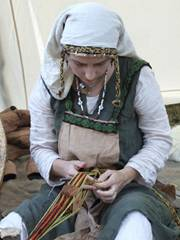
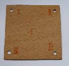
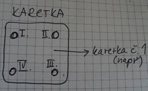
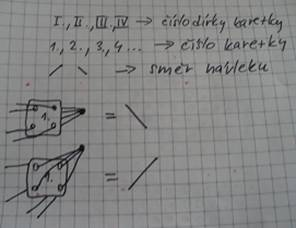
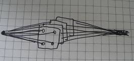
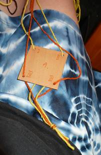
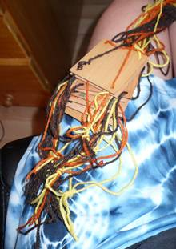
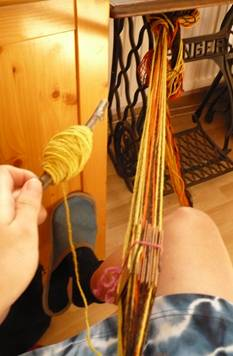
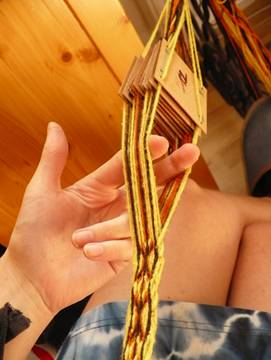
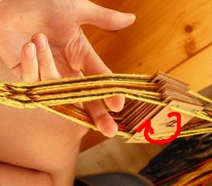

Je libo...
- Rasta copánky
- Francouzské copánky
- Úpravy dreadů
-
Volné termíny
- Henna
- Karetky
-
- Fotogalerie
- Ceník
- Kontakt
- Vzkazy
- Odkazy
Evanii - rasta copánky v Brně
Návod na pletení karetek
Nějaký čas už se výrobou karetek zabývám a protože jsem měla sama v začátcích dost problém se sháněním návodu a informací, rozhodla jsem se sestavit takový svůj návod na jejich pletení. Zatím se zde zabývám úplnými základy toho jak s karetkováním začít. Pokusím se jej postupně doplňovat s přibývajícími zkušenostmi. Budu vděčná za jakékoli náměty a připomínky.
Co budete potřebovat?
-
Karetkové destičky – cca 5 cm velké úzké čtverečky s dírkou v každém rohu, pro začátek si jich vyrobte třeba 10-15, to vystačí na většinu jednodušších vzorů.
-
vlnu – materiál ze kterého chcete plést, ideální jsou alespoň 2 barvy (klasická vlna, kterou koupíte v galanterii v klubíčcích)
-
útek – protahovací vlákno namotané na čemkoliv (např. na klacíku)
-
opasek za který si k sobě přivážete pletenou karetku.
-
trpělivost a pečlivost – bez toho to prostě nejde :-)
Jak začít?
-
Sehnat si karetky – dají se snadno vyrobit z lepenky, nebo z kartonu, případně moduritu. Doporučuji si udělat oblé rohy, aby se nitě necuchaly.
Karetková destička 
-
Důležité je vymyslet vzor (pokud pleteme poprvé, tak se vzorem moc zatěžovat nemusíme, stačí přejít k bodu 3), osvědčilo se mi kreslit jej na čtverečkovaný papír, nebo je možné použít počítačový program ve kterém stačí zadat barvy a můžete zkoušet, tím se však připravíte o spoustu legrace překvapení při vymýšlení na papíře. (program ke stažení například zde: www.theloomybin.com )
-
Máme-li vzor, přistoupíme k přípravě karetek. Nastříháme si nitě v požadované délce karetky (a přičíst k tomu nějakou rezervu). Budeme vždy potřebovat počet nití, který je 4x větší než počet destiček, tj. např. při pletení na 10 destičkách si musíme připravit 40 nití). Můžeme se pustit do navlékání.
-
Při navlékání je nutné postupovat důsledně (pokud máme už vymyšlený vzor), neboť se ve výsledku každá chyba projeví a převlíkat nitě není zrovna příjemné. Každou dírkou karetky provlečeme jedno vlákno osnovové nitě. Tak postupujeme u všech destiček. Je velmi vhodné si karetky očíslovat a označit si také jednotlivé otvory na každé destičce. (Viz obrázky níž). To proto, aby se nám destičky při manipulaci nepomíchaly.
-
Máme-li všechny nitě povlečené, připravíme si útek (cca 10 m nitě namotáme na klacík, aby se nám to dobře provlékalo). Poskládáme si destičky do „štosu“ tak, že jsou podle pořadí seřazeny vedle sebe (viz obrázky níže). Nahoře otočenou směrem k nám bychom měli mít dírku, kterou označuji jako I. Jeden konec nití se většinou přivazuje kolem pasu (například k opasku), druhý konec nití přivážeme za nějaký pevný bod (noha stolu apod.).
-
Teď zbývá už jen samotné pletení. Karetkami vždy otočíme požadovaným směrem (k sobě, nebo od sebe – dle požadovaného vzoru) a po každém otočení provlékneme útkovou nit. Tak se nám pomalu začne rýsovat výsledná podoba karetky. Plést můžeme, dokud nám budou stačit osnovové nitě.
-
Pokup děláte vzor, při kterém se karetky otáčí jen jedním směrem, je nutné čas od času rozmotat nitě, jelikož se kroutí do kola. Pakliže směry otáčení karetek pravidelně střídáte, nitě se rozmotávají samy.
-
Ták, a jsme na konci. Pro lepší pochopení si prohlédněte obrázky níže!
Legenda
Λ = otočení karetkami směrem od sebeV = otočení karetkami směrem k sobě


Ukázka navlečení karetek – více viz fotky níže 
Postup při pletení karetky (fotky)
|  |  |
| Takhle vypadá navlečená karetka (na 1 karetku jsou potřeba 4 nitě), čísla děr označují pořadí hran karetky při otáčení
|
Takhle vypadá „štos“ již navlečených karetek připravených k pletení
|
|  |  |
| Jeden konec nití si přivážeme k sobě (například k pásku), druhý konec přivážeme k něčemu pevnému. Na obrázku také vidíte připravený útek (nit navlečená např. na klacku)
|
Tady už je karetka v průběhu pletení. Otvorem, který vznikne vždy po otočení karetek (tam co jsou na obrázku prstyJ ) prostrčíme útek a zase otočíme o 1 hranu k sobě nebo od sebe. Tím vzniká vzor.
|
|  |
Rada pro začátečníka
|
| Tady je nakreslena šipka, jak se karetky otáčí. Vezmeme si do rukou celý pakl a otočíme jimi o jednu hranu k sobě nebo od sebe. Podle toho jak se otáčí můžou vznikat různé vzory. |